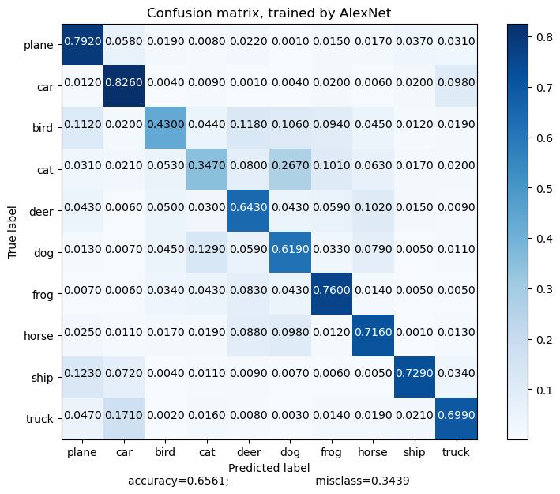

import numpy as np
import matplotlib.pyplot as plt
import torch
from torch.utils.data import DataLoader
from torch import nn
from torchvision import datasets
from torchvision.transforms import transforms
from torchvision.transforms.functional import to_pil_imageAlexNet
—“title”: “AlexNet” “author”: “이정재” “date”: “2024-01-29”
Step 1 : Load libraries & Datasets
# Datasets
train_img = datasets.CIFAR10(
root = 'data',
train = True,
download = True,
transform = transforms.ToTensor(),
)
test_img = datasets.CIFAR10(
root = 'data',
train = False,
download = True,
transform = transforms.ToTensor()
)Downloading https://www.cs.toronto.edu/~kriz/cifar-10-python.tar.gz to data/cifar-10-python.tar.gz
Extracting data/cifar-10-python.tar.gz to data
Files already downloaded and verified100%|████████████████████████████████████████████████████████████████| 170498071/170498071 [00:18<00:00, 9081435.00it/s]Step 2 : Data preprocessing
불러온 이미지의 증강을 통해 학습 정확도를 향상시키도록 합니다.
- RandomCrop
- RandomHorizontalFlip
- Normalize
mean = train_img.data.mean(axis=(0,1,2)) / 255
std = train_img.data.std(axis=(0,1,2)) / 255
print(f'평균: {mean}, 표준편차:{std}')평균: [0.49139968 0.48215841 0.44653091], 표준편차:[0.24703223 0.24348513 0.26158784]train_img.data.shape , test_img.data.shape((50000, 32, 32, 3), (10000, 32, 32, 3))transform_train = transforms.Compose([
transforms.ToTensor(),
transforms.Normalize(mean, std),
transforms.RandomCrop(size=train_img.data.shape[1], padding=4),
transforms.RandomHorizontalFlip(),
])
transform_test = transforms.Compose([
transforms.ToTensor(),
transforms.Normalize(mean, std),
])train_img2 = datasets.CIFAR10(
root = 'data',
train = True,
download = True,
transform = transform_train,
)
test_img2 = datasets.CIFAR10(
root = 'data',
train = False,
download = True,
transform = transform_test,
)Files already downloaded and verified
Files already downloaded and verifiedStep 3 : Set hyperparameters
epochs = 10
batch_sizes = 128
learning_rate = 1e-3
device = torch.device("cuda" if torch.cuda.is_available() else "cpu")
print("Using Device:", device)Using Device: cudaStep 4 : Create DataLoader
# Create DataLoader
train_loader = DataLoader(train_img2, batch_size = batch_sizes, shuffle = True)
test_loader = DataLoader(test_img2, batch_size = batch_sizes, shuffle = True)EDA
print(train_img, '\n-----------------------\n', test_img)Dataset CIFAR10
Number of datapoints: 50000
Root location: data
Split: Train
StandardTransform
Transform: ToTensor()
-----------------------
Dataset CIFAR10
Number of datapoints: 10000
Root location: data
Split: Test
StandardTransform
Transform: ToTensor()train_features, train_labels = next(iter(train_loader))
print(f"Feature batch shape: {train_features.size()}")
print(f"Labels batch shape: {train_labels.size()}")Feature batch shape: torch.Size([128, 3, 32, 32])
Labels batch shape: torch.Size([128])labels_map = {
0: "plane",
1: "car",
2: "bird",
3: "cat",
4: "deer",
5: "dog",
6: "frog",
7: "horse",
8: "ship",
9: "truck",
}figure = plt.figure(figsize=(8, 8))
cols, rows = 5, 5
for i in range(1, cols * rows +1):
sample_idx = torch.randint(len(train_img), size=(1,)).item()
img, label = train_img[sample_idx]
figure.add_subplot(rows, cols, i)
plt.title(labels_map[label])
plt.axis('off')
plt.imshow(to_pil_image(img))
plt.show()
Step 5 : Set Network Structure
class AlexNet(nn.Module):
def __init__(self, num_classes=10):
super(AlexNet, self).__init__()
self.features = nn.Sequential(
nn.Conv2d(3, 96, kernel_size=11, stride=4),
nn.ReLU(inplace=True),
nn.MaxPool2d(kernel_size=3, stride=2, padding=1),
nn.Conv2d(96, 256, kernel_size=5, padding=2),
nn.ReLU(inplace=True),
nn.MaxPool2d(kernel_size=3, stride=2, padding=1),
nn.Conv2d(256, 384, kernel_size=3, padding=1),
nn.ReLU(inplace=True),
nn.Conv2d(384, 384, kernel_size=3, padding=1),
nn.ReLU(inplace=True),
nn.Conv2d(384, 256, kernel_size=3, padding=1),
nn.ReLU(inplace=True),
nn.MaxPool2d(kernel_size=3, stride=2, padding=1),
)
self.classifier = nn.Sequential(
nn.Linear(256, 4096),
nn.Dropout(0.5),
nn.ReLU(inplace=True),
nn.Linear(4096, num_classes),
)
def forward(self, x):
x = self.features(x)
x = x.view(x.size(0), -1)
x = self.classifier(x)
return(x)Step 6 : Create Model instance
# Create Moedl instance
model = AlexNet().to(device)
print(model)AlexNet(
(features): Sequential(
(0): Conv2d(3, 96, kernel_size=(11, 11), stride=(4, 4))
(1): ReLU(inplace=True)
(2): MaxPool2d(kernel_size=3, stride=2, padding=1, dilation=1, ceil_mode=False)
(3): Conv2d(96, 256, kernel_size=(5, 5), stride=(1, 1), padding=(2, 2))
(4): ReLU(inplace=True)
(5): MaxPool2d(kernel_size=3, stride=2, padding=1, dilation=1, ceil_mode=False)
(6): Conv2d(256, 384, kernel_size=(3, 3), stride=(1, 1), padding=(1, 1))
(7): ReLU(inplace=True)
(8): Conv2d(384, 384, kernel_size=(3, 3), stride=(1, 1), padding=(1, 1))
(9): ReLU(inplace=True)
(10): Conv2d(384, 256, kernel_size=(3, 3), stride=(1, 1), padding=(1, 1))
(11): ReLU(inplace=True)
(12): MaxPool2d(kernel_size=3, stride=2, padding=1, dilation=1, ceil_mode=False)
)
(classifier): Sequential(
(0): Linear(in_features=256, out_features=4096, bias=True)
(1): Dropout(p=0.5, inplace=False)
(2): ReLU(inplace=True)
(3): Linear(in_features=4096, out_features=10, bias=True)
)
)Step 7 : Model compile
# loss
loss = nn.CrossEntropyLoss()
# optimizer
optimizer = torch.optim.Adam(model.parameters(), lr=learning_rate)Step 8 : Set train loop
def train(train_loader, model, loss_fn, optimizer):
model.train()
size = len(train_loader.dataset)
for batch, (X,y) in enumerate(train_loader):
X, y = X.to(device), y.to(device)
pred = model(X)
# loss calculation
loss = loss_fn(pred, y)
# backpropagation
optimizer.zero_grad()
loss.backward()
optimizer.step()
if batch % 100 == 0:
loss, current = loss.item(), batch * len(X)
print(f'loss: {loss:>7f} [{current:>5d}]/{size:5d}')Step 9 : Set test loop
def test(test_loader, model, loss_fn):
model.eval()
size = len(test_loader.dataset)
num_batches = len(test_loader)
test_loss, correct = 0, 0
with torch.no_grad():
for X, y in test_loader:
X, y = X.to(device), y.to(device)
pred = model(X)
test_loss += loss_fn(pred, y).item()
correct += (pred.argmax(1)==y).type(torch.float).sum().item()
test_loss /= num_batches
correct /= size
print(f"Test Error: \n Accuracy: {(100*correct):>0.1f}%, Avg loss: {test_loss:8f}\n")Step 10 : Run Model
for i in range(epochs):
print(f"epochs {i+1} \n-----------------------------")
train(train_loader, model, loss, optimizer)
test(test_loader, model, loss)
print('Done!')epochs 1
-----------------------------
loss: 2.300106 [ 0]/50000
loss: 1.961412 [12800]/50000
loss: 1.877241 [25600]/50000
loss: 1.800212 [38400]/50000
Test Error:
Accuracy: 31.4%, Avg loss: 1.762373
epochs 2
-----------------------------
loss: 1.795186 [ 0]/50000
loss: 1.576234 [12800]/50000
loss: 1.639605 [25600]/50000
loss: 1.649888 [38400]/50000
Test Error:
Accuracy: 44.0%, Avg loss: 1.494407
epochs 3
-----------------------------
loss: 1.534194 [ 0]/50000
loss: 1.496532 [12800]/50000
loss: 1.524187 [25600]/50000
loss: 1.440067 [38400]/50000
Test Error:
Accuracy: 49.1%, Avg loss: 1.400005
epochs 4
-----------------------------
loss: 1.554884 [ 0]/50000
loss: 1.389567 [12800]/50000
loss: 1.310677 [25600]/50000
loss: 1.434475 [38400]/50000
Test Error:
Accuracy: 51.9%, Avg loss: 1.308864
epochs 5
-----------------------------
loss: 1.384561 [ 0]/50000
loss: 1.448307 [12800]/50000
loss: 1.549824 [25600]/50000
loss: 1.296622 [38400]/50000
Test Error:
Accuracy: 54.0%, Avg loss: 1.252349
epochs 6
-----------------------------
loss: 1.339483 [ 0]/50000
loss: 1.216769 [12800]/50000
loss: 1.371759 [25600]/50000
loss: 1.374979 [38400]/50000
Test Error:
Accuracy: 56.6%, Avg loss: 1.201752
epochs 7
-----------------------------
loss: 1.369484 [ 0]/50000
loss: 1.234365 [12800]/50000
loss: 1.124013 [25600]/50000
loss: 1.045216 [38400]/50000
Test Error:
Accuracy: 55.2%, Avg loss: 1.240022
epochs 8
-----------------------------
loss: 1.255546 [ 0]/50000
loss: 1.335250 [12800]/50000
loss: 1.238086 [25600]/50000
loss: 1.284560 [38400]/50000
Test Error:
Accuracy: 58.5%, Avg loss: 1.171398
epochs 9
-----------------------------
loss: 1.246493 [ 0]/50000
loss: 1.291452 [12800]/50000
loss: 1.238421 [25600]/50000
loss: 1.272063 [38400]/50000
Test Error:
Accuracy: 59.5%, Avg loss: 1.131185
epochs 10
-----------------------------
loss: 1.220213 [ 0]/50000
loss: 1.313022 [12800]/50000
loss: 1.362849 [25600]/50000
loss: 1.224882 [38400]/50000
Test Error:
Accuracy: 58.5%, Avg loss: 1.141315
Done!/root/anaconda3/envs/py/lib/python3.10/site-packages/torch/nn/modules/conv.py:456: UserWarning: Applied workaround for CuDNN issue, install nvrtc.so (Triggered internally at /opt/conda/conda-bld/pytorch_1702400366987/work/aten/src/ATen/native/cudnn/Conv_v8.cpp:80.)
return F.conv2d(input, weight, bias, self.stride,Step 11 : Confusion Matrix
import itertools
def plot_confusion_matrix(cm, target_names=None, cmap=None,
normalize=True, labels=True, title='Confusion matrix'):
accuracy = np.trace(cm) / float(np.sum(cm))
misclass = 1 - accuracy
if cmap is None:
cmap = plt.get_cmap('Blues')
if normalize:
cm = cm.astype('float') / cm.sum(axis=1)[:, np.newaxis]
plt.figure(figsize=(8, 6))
plt.imshow(cm, interpolation='nearest', cmap=cmap)
plt.title(title)
plt.colorbar()
thresh = cm.max() / 1.5 if normalize else cm.max() / 2
if target_names is not None:
tick_marks = np.arange(len(target_names))
plt.xticks(tick_marks, target_names)
plt.yticks(tick_marks, target_names)
if labels:
for i, j in itertools.product(range(cm.shape[0]), range(cm.shape[1])):
if normalize:
plt.text(j, i, "{:0.4f}".format(cm[i, j]),
horizontalalignment="center",
color="white" if cm[i, j] > thresh else "black")
else:
plt.text(j, i, "{:,}".format(cm[i, j]),
horizontalalignment="center",
color="white" if cm[i, j] > thresh else "black")
plt.tight_layout()
plt.ylabel('True label')
plt.xlabel('Predicted label\naccuracy={:0.4f};\
misclass={:0.4f}'.format(accuracy, misclass))
plt.show()from sklearn.metrics import confusion_matrix
model.eval()
ylabel = []
ypred_label = []
for batch_idx, (inputs, targets) in enumerate(test_loader):
inputs, targets = inputs.to(device), targets.to(device)
outputs = model(inputs)
_, predicted = outputs.max(1)
ylabel = np.concatenate((ylabel, targets.cpu().numpy()))
ypred_label = np.concatenate((ypred_label, predicted.cpu().numpy()))
cnf_matrix = confusion_matrix(ylabel, ypred_label)plot_confusion_matrix(cnf_matrix,
target_names=labels_map.values(),
title='Confusion matrix, trained by AlexNet')